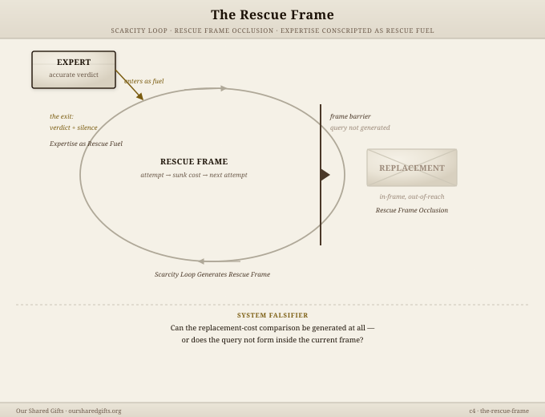
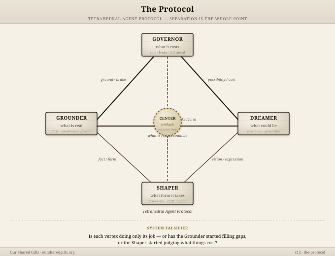

How a lived experience becomes a stable pattern that can travel. The Machine handles internal metabolism. The Field describes external release. This page names what connects them — and what keeps the loop running.
The Full Torus
The Machine and The Field are not separate systems. They are one continuous loop. A pattern enters through intake, gets extracted and tested, crosses the gate into canon, then — through the transmission artifacts — goes out into the field for cross-territory confirmation. What comes back from the field makes the canon stronger. A stronger canon makes the next cycle's extraction more accurate. The loop compounds.
Kevin appears at exactly two points: the canon gate (entry) and canon update (after territory confirmation). Everything else runs without him.
The Pipeline
InternalIntake → CanonThe Machine
Raw material enters the drop zone. The Substrate Skill extracts structural patterns. The Converger screens against the standing canon — COMPOST, HOLD, or PROMOTE-READY. The Dispatcher surfaces one candidate per day. Kevin marks at the gate.
A promoted pattern immediately becomes a production target. Two artifacts are produced for each canon pattern:
Recognition Card — pocket-sized, print-ready. Causes recognition in someone who has lived the pattern but never seen it named. Designed to work in seven seconds, without explanation. The card travels without Kevin attached.
Pattern Infographic — full-width, for articles and longer-form writing. Shows the structural mechanism as a system diagram — how the pattern operates, what it connects to, where it gets leverage.
These are different jobs. The card fires before understanding. The infographic enables understanding after recognition has occurred.
ExternalArtifacts → FieldThe Field
Recognition Cards travel in articles, Substacks, direct sharing. Pattern Infographics embed in longer writing. Readers encounter the visual grammar before knowing the terminology. After enough encounters, they recognize the card format before reading the content — the format trains recognition independently of the content.
Open source. No license. No attribution required. Released completely through The Field.
TestingTerritory ConfirmationThe field
A pattern confirmed in one territory is a hypothesis. Confirmed across several, it approaches structural law. The background conditions that make a pattern hold in one territory are often invisible until they're absent in another. That absence is signal — it narrows the pattern to its actual load-bearing form.
What returns from the field: what held, what broke, what background conditions were required.
UpdateCanon RefinementKevin — only here
Cross-territory confirmation returns to the canon. Kevin marks: the pattern strengthens, narrows, or composts into another. A pattern that doesn't survive multiple territories gets composted — not accumulated.
This is the second and final place Kevin stands. The cycle begins again.
The Recognition Card
The card follows the recognition arc, not the conceptual arc. The image and recognition sentence land first — before the name. The name means nothing until recognition has already fired.
Trigger
Structural diagram + recognition sentence. Fifteen words or fewer. This fires in the first seven seconds. If it doesn't cause "I've seen that," the card hasn't worked yet — not a content problem, a recognition problem.
Name
The pattern name. Lands after recognition, not before. Once the body has already recognized the pattern, the name makes it permanent — it gives the reader something to think with that they didn't have before.
Drift
How this pattern hides. Why it was invisible before now. This is the click moment: not just "I've seen this" but "I've been in this and didn't know it had a shape." Drift is the camouflage the pattern uses to remain operational.
Boundary
The detection threshold. The specific observable condition where the pattern crosses from ambient to named. What you can see, hear, or measure that tells you it's active rather than latent.
One Move
What to do in the next 24 hours. Not a strategy — one thing, available tomorrow, given that the pattern is now named and visible. The move should be available whether or not anything else changes.
Return
If it holds in your territory. Write to Kevin through The Door with what held and what broke. A pattern confirmed across more territories is a stronger pattern. The return path is what makes the loop geometric rather than additive.
Design Register
The cards are instruments, not illustrations. The visual register aims at: field guide, aircraft checklist, engineering placard, systems diagram. What to avoid: gradients, stock imagery, abstract AI aesthetics, inspirational framing. The graphics should feel like tools someone keeps — not posters someone admires.
Format
Invariant
Same layout, all 35. The format trains recognition before the content does.
Image
Structural
Diagram of mechanism — not illustration of concept.
Register
Instrumentation
Field guide. Placard. Checklist. Not inspiration.
Grammar
Pre-verbal
Recognition fires before the reader processes the text.
Cluster Structures — Two Examples
The rescue frame is what recognition cards work against — the structural trap that makes the viable exit invisible. The protocol is how the engine runs distributed coherence without a center.

C4 · The Rescue Frame — Scarcity Loop · Rescue Frame Occlusion · Expertise as Rescue Fuel

C12 · The Protocol — four-vertex distributed coherence without a center; the structural form the engine runs on
Composability
A single article might embed three or four pattern infographics — not for comprehensiveness, but because those patterns are active in the specific situation being described. Readers encounter combinations of patterns before they know the full canon. Each combination is a different reading of the same territory.
When a recognition card arrives in someone's field from a third party — someone who received it, found it useful, passed it along — and that reader engages with it without knowing where it came from: that is when transmission is working. The pattern is traveling without Kevin attached. That is the goal of the engine.